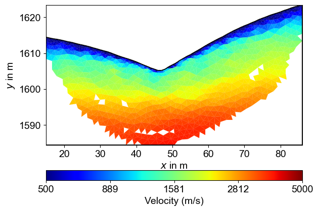
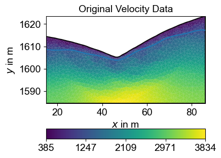
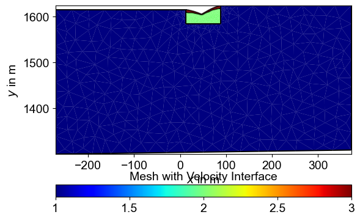

Note
Go to the end to download the full example code.
Ex. Structure-Constrained Resistivity Inversion
This example demonstrates how to incorporate structural information from seismic velocity models into ERT inversion for improved subsurface imaging.
The workflow includes: 1. Loading seismic travel time data and performing velocity inversion 2. Extracting velocity interfaces at specified thresholds 3. Creating ERT meshes with geological layer boundaries 4. Structure-constrained ERT inversion using velocity-derived interfaces 5. Comparison with unconstrained inversion results
Structure-constrained inversion significantly improves the accuracy of resistivity models by incorporating a priori geological information, leading to more reliable hydrological interpretations.
import matplotlib.pyplot as plt
import numpy as np
import pygimli as pg
from pygimli.physics import ert
import pygimli.physics.traveltime as tt
import os
import sys
import matplotlib.pylab as pylab
# Setup package path for development
try:
# For regular Python scripts
current_dir = os.path.dirname(os.path.abspath(__file__))
except NameError:
# For Jupyter notebooks
current_dir = os.getcwd()
# Add the parent directory to Python path
parent_dir = os.path.dirname(current_dir)
if parent_dir not in sys.path:
sys.path.append(parent_dir)
# Import PyHydroGeophysX modules
from PyHydroGeophysX.inversion.time_lapse import TimeLapseERTInversion
from PyHydroGeophysX.core.mesh_utils import MeshCreator,add_velocity_interface,createTriangles,extract_velocity_interface
# Set up matplotlib parameters
params = {'legend.fontsize': 15,
'axes.labelsize': 14,
'axes.titlesize':14,
'xtick.labelsize':14,
'ytick.labelsize':14}
pylab.rcParams.update(params)
plt.rcParams["font.family"] = "Arial"
### 1. load ERT and SRT data
load seismic data
ttData = tt.load("../examples/results/workflow_example/synthetic_seismic_data.dat")
# load ERT data
ertData = ert.load("../examples/results/TL_measurements/appres/synthetic_data30.dat")
### 2. Set up inversion domain
using ERT data to create a mesh to take care of the boundary
paraBoundary = 0.1
ert1 = ert.ERTManager(ertData)
grid = ert1.createMesh(data=ertData,quality = 31,paraDX=0.5, paraMaxCellSize=2, boundaryMaxCellSize=3000,smooth=[2, 2],
paraBoundary = paraBoundary, paraDepth = 30.0)
ert1.setMesh(grid)
mesh = ert1.fop.paraDomain
mesh.setCellMarkers(np.ones((mesh.cellCount()))*2)
### 3. Invert the seismic travel time data first
# travel time inversion
TT = pg.physics.traveltime.TravelTimeManager()
TT.setMesh(mesh)
TT.invert(ttData, lam=50,
zWeight=0.2,vTop=500, vBottom=5000,
verbose=1, limits=[100., 6000.])
ax, cbar = TT.showResult(cMap='jet',coverage=TT.standardizedCoverage(),cMin=500,cMax=5000)
Seismic Velocity Inversion Results
{kind=link}

%% [markdown] ### 4. Get the structure interface
velocity_data = TT.model.array()
# Call the function with velocity data
smooth_x, smooth_z = extract_velocity_interface(mesh, velocity_data, threshold=1200,interval = 5)
fig, ax1 = plt.subplots(1, 1, figsize=(5, 3))
# Original data
pg.show(mesh, velocity_data, ax=ax1, cMap='viridis', colorBar=True)
ax1.set_title('Original Velocity Data')
ax1.plot(smooth_x, smooth_z)
Velocity Interface Extraction
This interface will be incorporated into the ERT mesh to constrain the inversion and preserve sharp geological boundaries.
{kind=link}

%% [markdown] ### 4. Put structure interface into mesh for inversion
markers, mesh_with_interface = add_velocity_interface(ertData, smooth_x, smooth_z)
mesh_with_interface
# chceck the mesh with interface
fig, ax = plt.subplots(figsize=(6, 4))
pg.show(mesh_with_interface, markers, ax=ax, cMap='jet', colorBar=True)
plt.title('Mesh with Velocity Interface')
plt.show()
mesh_with_interface
Mesh with Structural Constraints
The mesh refinement along the structural boundary ensures accurate representation of the geological interface while maintaining appropriate resolution for ERT measurements. This structured mesh allows the inversion to preserve sharp resistivity contrasts at the known geological boundary while applying smoothing constraints within each geological unit.
{kind=link}

%% [markdown] ### 5. Inversion with the updated mesh
mgrConstrained = ert.ERTManager()
mgrConstrained.invert(data=ertData, verbose=True, lam=10, mesh=mesh_with_interface,limits=[1., 10000.])
from palettable.lightbartlein.diverging import BlueDarkRed18_18
fixed_cmap = BlueDarkRed18_18.mpl_colormap
res_cov = mgrConstrained.coverage()[mgrConstrained.paraDomain.cellMarkers()]>-1.0
mgrConstrained.showResult(xlabel="Distance (m)", ylabel="Elevation (m)",coverage = res_cov,cMap=fixed_cmap)
Structure-Constrained ERT Inversion Results
The structure-constrained ERT inversion produces a resistivity model that honors both the electrical measurements and the geological structure derived from seismic data .. image:: /auto_examples/images/Ex_Structure_resinv_fig_04.png
- align:
center
- width:
800px
%% [markdown] ### 6. Save the mesh
mesh_with_interface.save("results/Structure_WC/mesh_with_interface.bms")